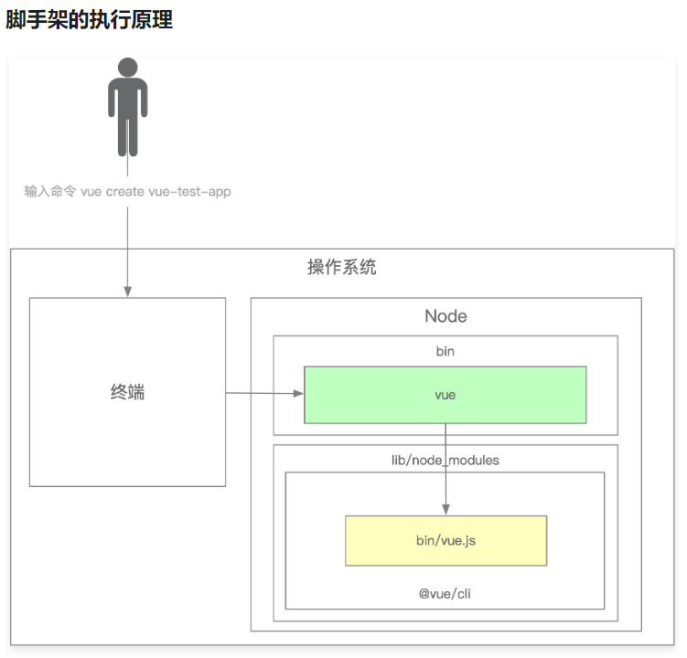

脚手架架构设计和框架搭建
脚手架的作用
开发脚手架的核心目标是：提升前端研发效能
脚手架的核心价值
- 自动化：项目重复代码拷贝/git 操作/发布上线操作
- 标准化：项目创建/git flow/发布流程/回滚流程
- 数据化：研发过程系统化、数据化，使得研发过程可量化
和自动化构建工具的区别
- 不满足需求：jenkins、travis 通常在 git hooks 中触发，需要在服务端执行，无法覆盖研发人员本地的功能，如：创建项目自动挡化、本地 git 操作自动化等
- 定制负责：jenkins、travis 定制过程需要开发插件，其过程较为复杂，需要使用 java 语音，对前端开发不够友好
入门
脚手架本质上来说，是一个操作系统的客户端。
它通过命令行执行：
vue create vue-test-app

脚手架的实现原理
通过 npm 全局安装一个 脚手架例如 @vue/cli 后，会解析 package.json 文件中的 bin 配置去在 node 的安装目录下的 bin 目录下，创建一个软连接，连接到软件包中，软连接的名称就是 bin 配置的 key，连接的文件就是 bin 配置的 value，value 指向的文件中需要设置 #! /usr/bin/env node 来标识文件执行的方法
基于 lerna 搭建自己的脚手架并且发布到 npm
安装方法
npm install -g @weilai-cli/core
执行命令
weilai-cli -h
进阶
理解 yargs 常用 API 和 开发流程
const cli = yargs(); // 创建一个基础脚手架
cli
// 配置 使用提示
.usage('Usage: weilai-test-cli [command] <options>')
// 配置 脚手架最少要接收一个命令
.demandCommand(1, "最少需要输入一个命令。 通过 --help 查看所有可用的命令和选项。")
// 配置 命令输入错误的时候可以根据输入 推荐合适的命令
.recommendCommands()
// 配置 严格的无法识别的命令也将报告为错误
.strict()
// 配置 发生故障时执行的方法
.fail((err, msg) => {
console.log(err)
})
// 配置 help 和 version 的别名
.alias('h', 'help')
.alias('v', 'version')
// 配置 容器宽度
.wrap(cli.terminalWidth())
// 配置 收尾的文字
.epilogue(
dedent`
哎哟，不错哟！
小伙汁
`
)
// 配置 gameStart 配置 类型为布尔值，描述是五黑走起，别名是 g
.options({
gameStart: {
type: 'boolean',
describe: '五黑走起',
alias: 'g'
}
})
.option('gameEnd', {
type: 'string',
// hidden: true,
describe: '冲冲冲',
alias: 'r'
})
// 配置 分组 把 gameStart 分配到 召唤师峡谷 这个组里面
.group(['gameStart'], '召唤师峡谷:')
.group(['gameEnd'], '慕课网:')
// 配置 命令 当执行 init [name] 命令的时候一系列的行为
.command(
'init [name]', 'Do init a project',
(yargs) => {
// 子命令
yargs
.option('name', {
type: 'string',
describe: 'Name of aproject',
alias: 'n'
})
},
(argv) => {
// 行为
console.log(argv)
}
)
// 配置 命令的第二种方法
.command({
command: 'list',
aliases: ['ls', 'la', 'll'],
describe: 'List local packages',
builder: (yargs) => {
},
handler: (argv) => {
console.log(argv)
}
})
// 解析参数
.parse(argv, context)
理解 lerna 实现原理
已经忘掉了😃
准备二刷三刷
import-local 实现原理，理解 require.resolve 实现原理
已经忘掉了😃
准备二刷三刷